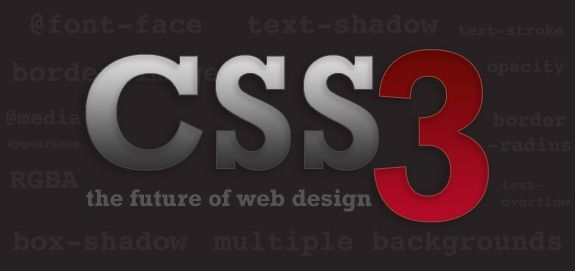
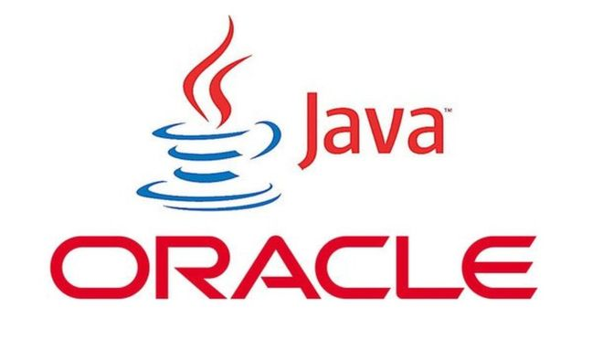
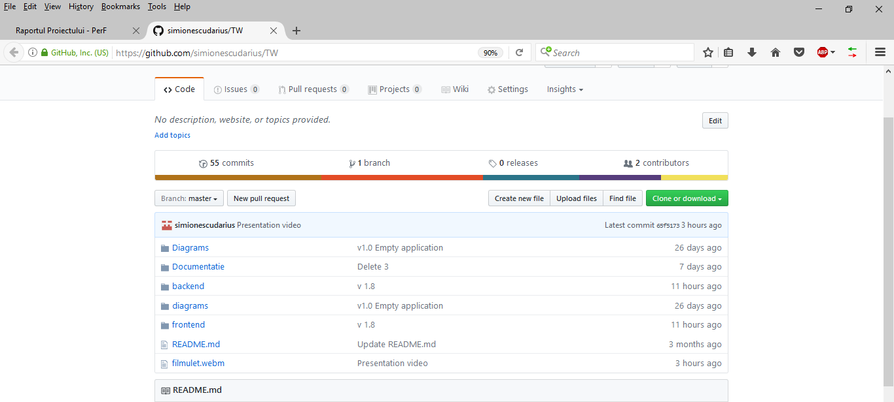
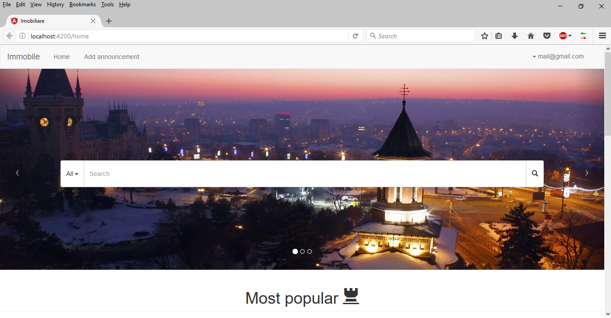
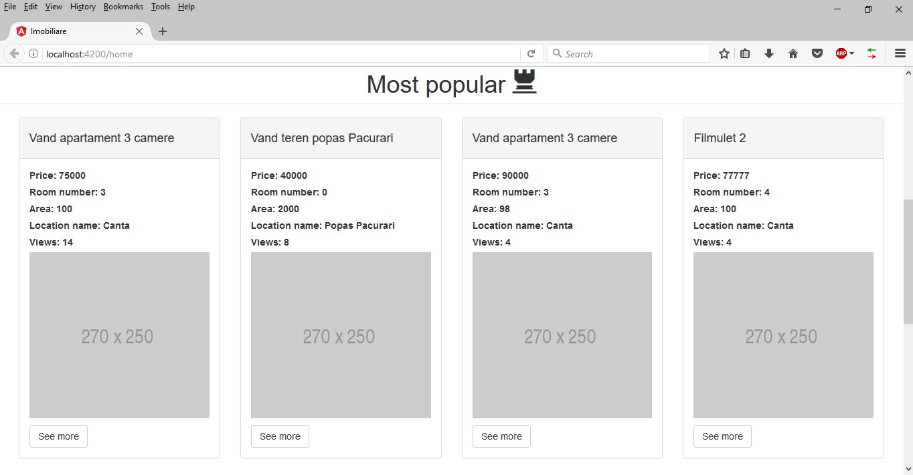
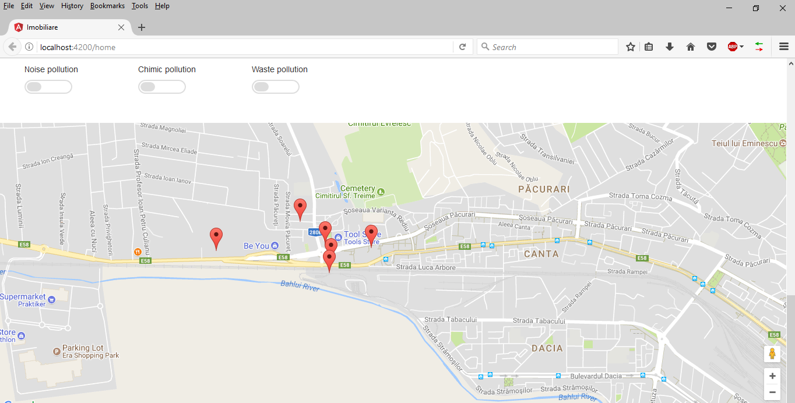
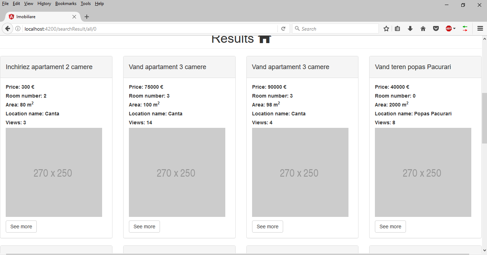
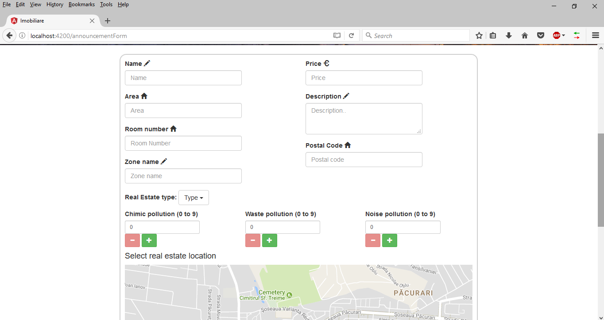
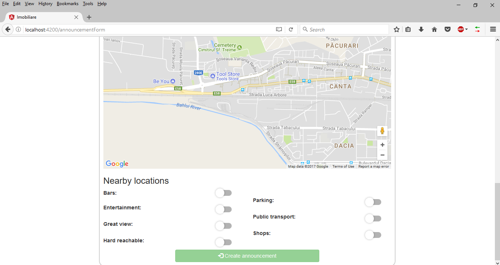
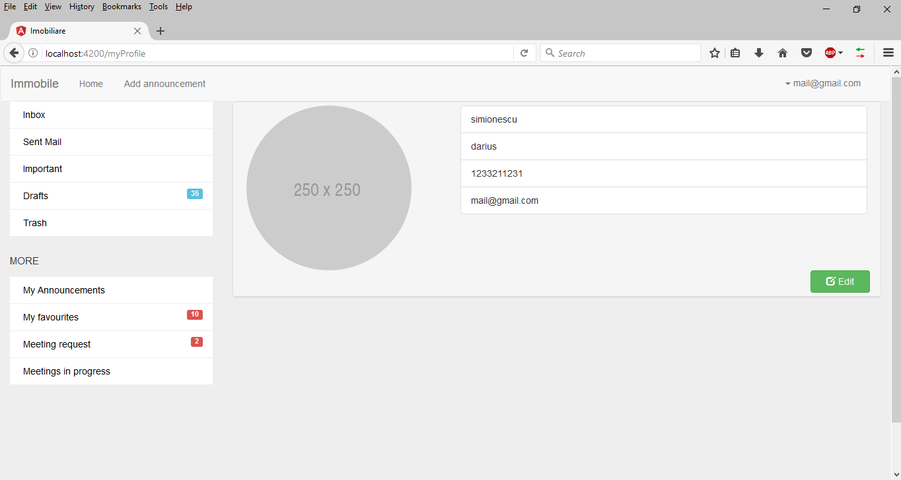

Perfect Place Finder
Cuprins:
Descriere
E necesara o aplicatie Web menita a gestiona eficient tranzactiile imobiliare. Sistemul va permite managementul unor imobile spre vanzare si/sau inchiriere, inclusiv informatii precum descriere, pret, coordonatele locatiei, date de contact, starea cladirii, facilitati oferite, riscuri posibile etc.
Workflow
- User flow

Tehnologii Folosite
- HTML5
HTML este o formă de marcare orientată către prezentarea documentelor text pe o singura pagină, utilizând un software de redare specializat, numit agent utilizator HTML, cel mai bun exemplu de astfel de software fiind browserul web. HTML furnizează mijloacele prin care conținutul unui document poate fi adnotat cu diverse tipuri de metadate și indicații de redare. Obiectivele sale principale au fost acelea de a îmbunătăți limbajul cu un suport pentru cele mai recente apariții multimedia în același timp menținândul ușor de citit de oameni și bine înțeles de computere și deviceuri (browsere web, parsere, etc.).

- BOOTSTRAP
Bootstrap este un framework de front-end, open-source, dezvoltat de Twitter. Frameworkul contine templete-uri de HTML si CSS pentru fonturi, forme, butoane, meniuri si alte componente pentru interfanta. De asemenea dispune de o librarie speciala construita peste Angular ce ofera posibilitatea manipularii elementelor in stil java script.

- CSS3
CSS (Cascading Style Sheets) este un standard pentru formatarea elementelor unui document HTML. Stilurile se pot atașa elementelor HTML prin intermediul unor fișiere externe sau în cadrul documentului, prin elementul și/sau atributul style. CSS se poate utiliza și pentru formatarea elementelor XHTML, XML și SVGL. CSS3 reprezintă un upgrade ce aduce câteva atribute noi și ajută la dezvoltarea noilor concepte in webdesign.

- JAVA
Java este un limbaj de programare orientat-obiect, puternic tipizat, conceput de către James Gosling la Sun Microsystems (acum filială Oracle) la începutul anilor ʼ90, fiind lansat în 1995. Acesta este utilizat în prezent cu succes și pentru programarea aplicațiilor destinate intranet-urilor. Limbajul împrumută o mare parte din sintaxă de la C și C++, dar are un model al obiectelor mai simplu și prezintă mai puține facilități de nivel jos. Un program Java compilat, corect scris, poate fi rulat fără modificări pe orice platformă care e instalată o mașină virtuală Java (engleză Java Virtual Machine, prescurtat JVM). Acest nivel de portabilitate (inexistent pentru limbaje mai vechi cum ar fi C) este posibil deoarece sursele Java sunt compilate într-un format standard numit cod de octeți (engleză byte-code) care este intermediar între codul mașină (dependent de tipul calculatorului) și codul sursă.

- ANGULAR CLI
AngularCLI este un instrument de interfață pentru linia de comandă care poate crea un proiect, adăuga fișiere și poate efectua o varietate de sarcini de dezvoltare în curs de desfășurare, cum ar fi testarea, gruparea și implementarea.

- SPRING
Spring Framework este o platformă cu sursă deschisă pentru simplificarea scrierii aplicațiilor în limbajul Java, dar există și o versiune pentru Platforma .NET. Deși este folosit în principal pentru platforma Java EE, Spring poate fi utilizat pe orice aplicație Java. Este văzut în comunitatea programatorilor ca o alternativă la modelul Enterpise JavaBeans (EJB).

- AJAX
Ajax (sau AJAX), prescurtare pentru Asynchronous JavaScript and XML, este o tehnică de programare pentru crearea de aplicații web interactive. Intenția este să facă paginile web să devină mai rapide și deci mai acceptate, prin schimbul în fundal al unor cantități mici de date cu serverul, astfel încât să nu fie nevoie ca pagina să fie reîncărcată la fiecare acțiune a utilizatorului. Aceasta are ca scop creșterea interactivității, vitezei și ușurinței în utilizare a aplicațiilor web. Ajax nu este o tehnologie în sine. Termenul este folosit pentru definirea aplicațiilor web ce folosesc un ansamblu de tehnologii: HTML sau XHTML pentru structura semantică a informațiilor; CSS pentru prezentarea informațiilor; Javascript pentru interactivitate, pentru procesarea informațiilor prezentate; Obiectul XMLHttpRequest pentru schimbul și manipularea informațiilor într-o manieră asincronă cu server-ul web; XML este folosit de obicei pentru transferarea datelor între server și client, deși orice format funcționează, inclusiv HTML preformatat, text simplu etc.

- PostgreSQL
PostgreSQL, adesea pur și simplu Postgres, este un sistem de management al bazelor de date obiect-relațional (ORDBMS), cu accent pe extensibilitate și respectarea standardelor. Ca server de baze de date, funcțiile sale principale sunt de a stoca în siguranță datele și de a returna aceste date ca răspuns la cererile din alte aplicații software. Se poate ocupa de sarcini de lucru, de la aplicații mici, cu o singură mașină, până la aplicații mari (sau pentru depozitarea datelor) cu mulți utilizatori simultani; Pe serverul MacOS, PostgreSQL este baza de date implicită și este disponibilă și pentru Microsoft Windows și Linux (furnizate în majoritatea distribuțiilor). .

- HIBERNATE
Object / Relational Mapping (ORM) este o tehnică de programare ce face posibilă accesarea și manipularea obiectelor fără ca programatorii să fie interesați de sursa de date de unde provin aceste obiecte. Această tehnică a apărut din nevoia de a depăși diferențele de paradigmă dintre modelul orientat pe obiecte (susținut de limbajele de programare de nivel înalt actuale) și modelul relațional (utilizat de cele mai populare sisteme de gestiune a bazelor de date).Este scris in Java si este destinat pentru rezolvarea problemelor de persistenta ale aplicatiilor J2SE si J2EE. In prezent este foarte des folosit dintre framework-urile ORM existente, in aplicatiile Java pentru web.

- GitHub
GitHub este un serviciu de gazduire web pentru proiecte de dezvoltare a software-ului care utilizeaza sistemul de control al versiunilor Git. GitHub ofera planuri tarifare pentru depozite private, si conturi gratuite pentru proiecte open source.

Structura Bazei de Date

Raport Tehnic
-
Etapele realizarii proiectului:
- Realizarea arhitecturii bazei de date
- Popularea bazei de date
- Crearea paginilor de Start + Log in+ Registre
- Crearea paginilor pentru user (Home, My account , Mail, Meetings , Announces)
Realizarea arhitecturii bazei de date
- Crearea unei diagrame UML pentru a face legaturile dintre tabelele bazei de date . Diagrama creeaza o privire in ansamblu a site-ului .
Popularea bazei de date
- A constat in generarea de date relevante pentru popularea tabelelor .
Crearea paginilor de Start + Log in+ Registre
- Pentru prima parte a proiectului am avut de realizat partea de front-end, iar aici primii pasi au fost crearea paginilor de start, Log in si Registre folosindu-ne de html si css .
Crearea paginilor pentru user (Home, My account , Mail, Meetings , Announces)
- Finalizarea front-end-ului .
Structura site-ului






